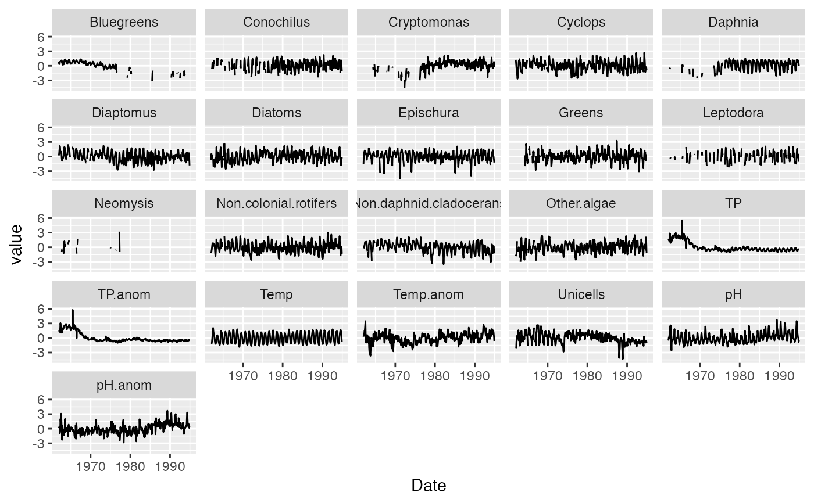

Lake Washington Plankton Data
lakeWA.RdMonthly Lake Washington (WA, USA) plankton, temperature, total phosphorous, and pH data 1962 to 1994.
Usage
data(lakeWA)Details
The lakeWA is a 32-year time series (1962-1994) of monthly plankton counts from Lake Washington, Washington, USA. lakeWA is a transformed version of the raw data (available in the MARSS package data(lakeWAplanktonRaw, package="MARSS")). Zeros have been replaced with NAs (missing). The plankton counts are logged (natural log) and standardized to a mean of zero and variance of 1 (so logged and then z-scored). Temperature, TP & pH were also z-scored but not logged (so z-score of the untransformed values for these covariates). The single missing temperature value was replaced with -1 and the single missing TP value was replaced with -0.3. The two missing pH values were interpolated. Monthly anomalies for temperature, TP and pH were computed by removing the monthly means (computed over the 1962-1994 period). The anomalies were then z-scored to remove mean and standardize variance to 1.
References
Adapted from the Lake Washington database of Dr. W. T. Edmondson, as funded by the Andrew Mellon Foundation; data courtesy of Dr. Daniel Schindler, University of Washington, Seattle, WA.
Hampton, S. E. Scheuerell, M. D. Schindler, D. E. (2006) Coalescence in the Lake Washington story: Interaction strengths in a planktonic food web. Limnology and Oceanography, 51, 2042-2051.
Examples
# The lakeWA data frame was created with the following code:
if (FALSE) {
data(lakeWAplankton, package = "MARSS")
lakeWA <- data.frame(lakeWAplanktonTrans)
# add on month and date columns
lakeWA$Month.abb <- month.abb[lakeWA$Month]
lakeWA$Date <- as.Date(paste0(lakeWA$Year, "-", lakeWA$Month,"-01"))
# interpolate 2 missing values in pH
lakeWA$pH[is.na(lakeWA$pH)] <- MARSS::MARSS(lakeWA$pH)$states[1, is.na(lakeWA$pH)]
# create monthly anomalies
lakeWA$Temp.anom <- residuals(lm(Temp ~ Month.abb, data=lakeWA))
lakeWA$TP.anom <- residuals(lm(TP ~ Month.abb, data=lakeWA))
lakeWA$pH.anom <- residuals(lm(pH ~ Month.abb, data=lakeWA))
# resort the columns
lakeWA <- lakeWA[,c(22,1:2,21,3:5,23:25,6:20)]
# zscore everything
for (i in 5:25) lakeWA[[i]] <- MARSS::zscore(lakeWA[[i]])
save( lakeWA, file="data/lakeWA.RData" )
}
library(ggplot2)
library(tidyr)
df <- lakeWA %>%
pivot_longer(
cols = Temp:Non.colonial.rotifers,
names_to = "variable",
values_to = "value"
)
ggplot(df, aes(x=Date, y=value)) +
geom_line() +
facet_wrap(~variable)

data(lakeWA)